Windowsでは、CygwinにGitを導入する方法と、msysgitを導入する方法の2通りの方法があります。
今回はお手軽かつ高速なmsysgitを導入します。
msysgitの場合、msysgit本体だけではうまく日本語が扱えないので、nkfというプログラムの導入も行う必要があります。
msysgitのサイト に移動し、Git-1.7.6-preview201107xx.exeと書かれたリンクを選択します。
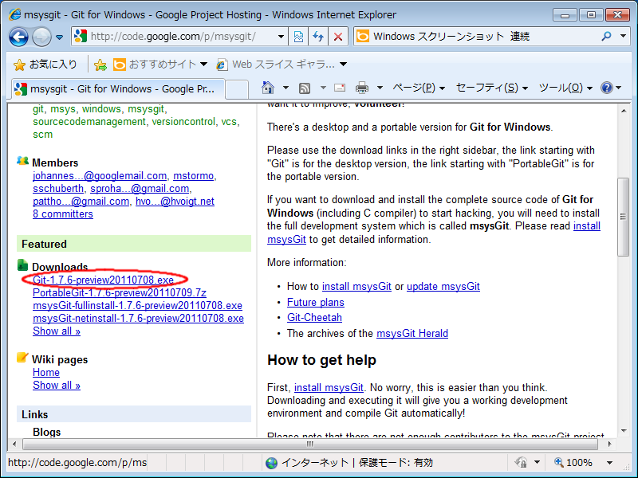
ダウンロード用のリンクを選択し、インストーラをダウンロードします。
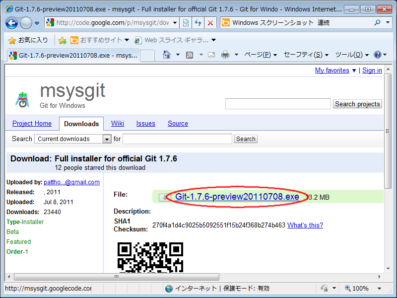
ダウンロードしてきたファイルを実行します。
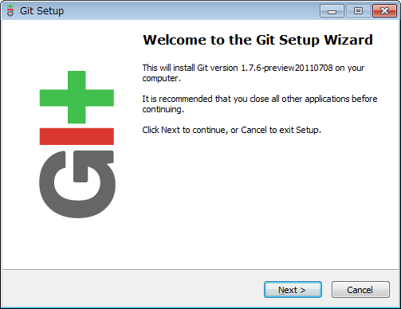
ライセンスが表示されます。
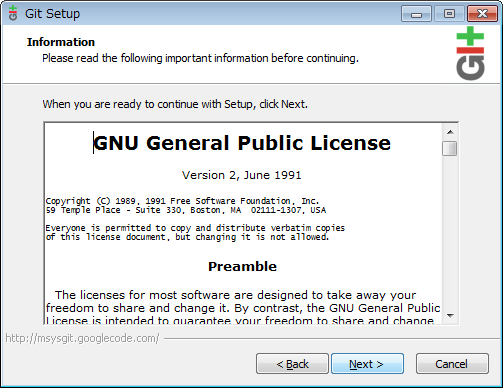
インストール場所は、特にこだわりがなければそのままにしておきます。 32bit版の場合、(x86)は付かないので注意してください。
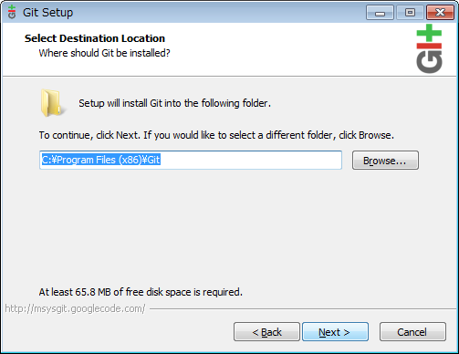
インストールの設定です。 デスクトップにショートカットがあっても邪魔なだけなので、外しておきます。
Git Bash Hereがあった方が何かと便利なので、Windows Explorer integrationは 「Context menu entries」がいいでしょう。
Git GUI HereはGit Bash Hereから起動できるので、ここではチェックを入れていません。
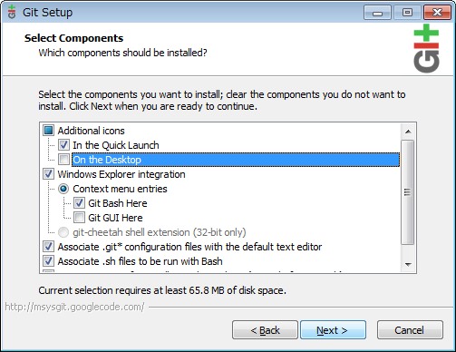
スタートメニューに登録する名前です。
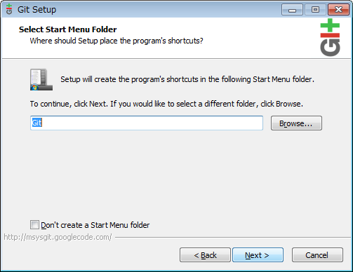
PATHにgitの実行ファイルが格納されたbinを使いするかどうかです。 基本的にはGit Bash Hereを使うことになるので、ここではデフォルトのままにしておきます。
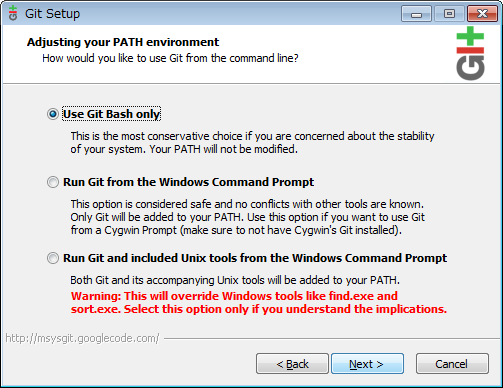
改行文字の変換の設定です。 後で変更可能なのでどれでもいいのですが、プアなエディタを使っているのでなければ、 一番下の「何も変換しない」設定がおすすめです。
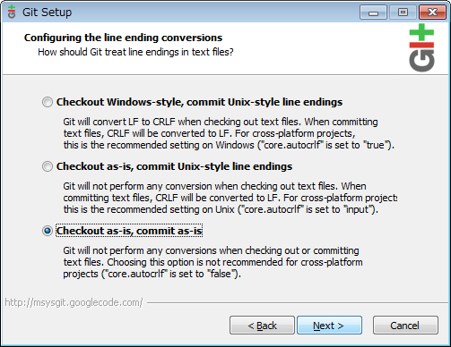
しばらくお待ちください。
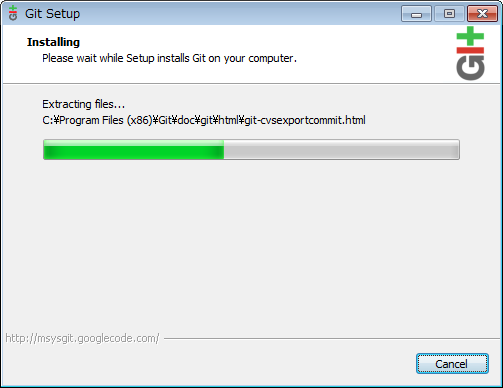
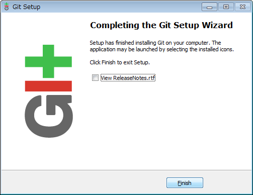
Windowsでは、Gitのインストールディレクトリのetcの中にあるファイルを編集する必要があります。
Windows Vista/7をお使いの方は以下の手順を実行前に、 Usersグループに対してetcディレクトリに書き込み権限を与えておいてください。
inputrcを開き、
# disable/enable 8bit input
# set meta-flag on
# set input-meta on
# set output-meta off
# set convert-meta on
と書かれた場所を探します。おそらく14行目付近にあるはずです。
これを以下のように書き換えます。
# disable/enable 8bit input
# set meta-flag on
# set input-meta on
# set output-meta off
# set convert-meta on
set convert-meta off
set meta-flag on
set output-meta on
set kanji-code utf-8
この修正により、日本語の入力が可能になります。
profileを開き、ファイルの最後に
export GIT_PAGER="nkf -s | LESSCHARSET=utf-8 less"
と追記します。
この修正により、日本語の出力が可能になります。
以下のコマンドを実行します。
sudo port install git-core
インストール終了です。
以下のコマンドを実行します。
brew install git
インストール終了です。
必要最小限の設定を行います。
Windowsの場合、適当なディレクトリを右クリックして、Git Bash Hereを実行します。
その他のOSの場合、bashなりzshなりを開きます。
以下のコマンドを実行します。
git config --global user.name ユーザ名
git config --global user.email メールアドレス
git config --global color.ui auto
コミットメッセージなどを入力するエディタの設定を行います。
エディタの選定基準としては、
を満たすものなら基本的には大丈夫です。
例えば、WindowsでGVimを使用する場合、Gitのインストールディレクトリのetcの中にあるprofileを開き、 ファイルの最後に以下の記述を追加します。
export GIT_EDITOR='/C/Apps/vim/gvim.exe'
パスに空白が入っていると面倒なので、空白が入っていない場所に入れておくといいでしょう。
Windows以外の場合、ホームディレクトリの.bashrcなどのファイルに、上記の記述を追記します。